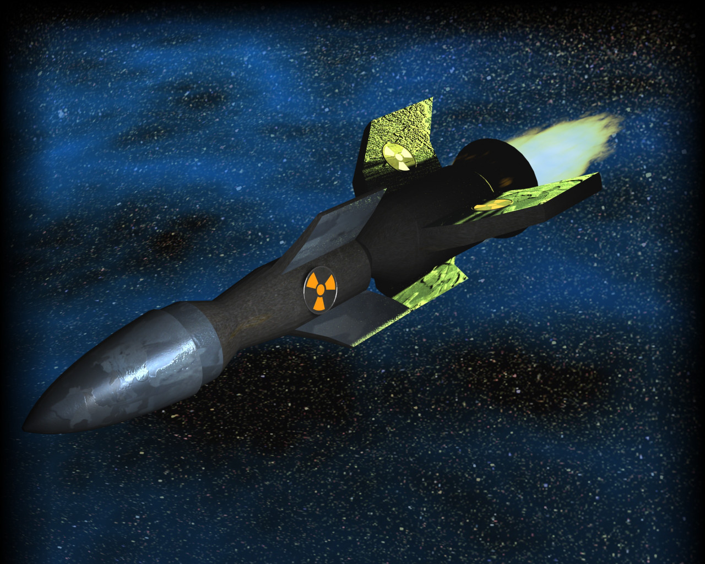

La bombe HA est une arme très puissante, capable d'entraîner une réaction nucléaire en chaîne à l'échelle d'un système sectoriel.
Seul un croiseur HA est en mesure de propulser l'ogive vers un autre système au cours d'un bombardement.